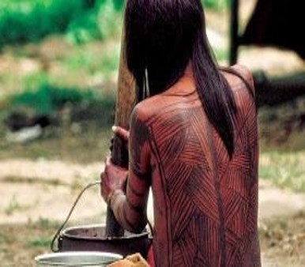
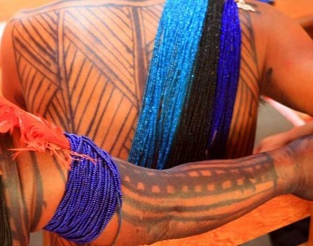
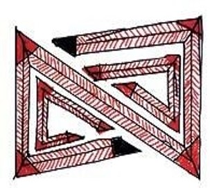
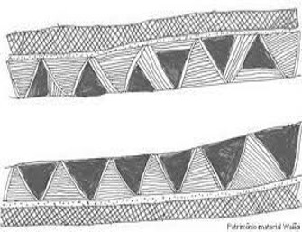
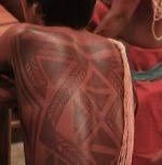

Descrição da imagem: desenho de grafismo Kusiwa com traçados manuais pretos sobre fundo branco. Um retângulo na horizontal está dividido ao meio com duas linhas próximas que se estendem da esquerda à direita. Tanto na parte superior quanto na parte inferior do retângulo traços que representam espinhas de peixe, estão dispostas da esquerda para a direita com grupos de linhas sempre em diagonal, da esquerda para direita, para cima ou para baixo. O encontro de cada grupo de direções diferentes de linhas é limitado pelo grafismo da própria arte em zig-zag.
IMAGEM 2 - DESENHOS CORPORAIS

Descrição da imagem: Foto de uma pessoa indígena de costas e da cintura para cima. Nas costas grafia kusiwa com traços pretos representando espinha de peixe. São grupos de linhas em direções diferentes e organizadas dentro de retângulo que segue a extensão da costa de cima para baixo. no centro, na coluna linha grossa preta. O braço esquerdo com linhas também grossas e espaçadas envolvem o membro do ombro até a mão. Seus cabelos são pretos, lisos e abaixo do ombro. A sua frente e à esquerda panela de alumínio com alça fina que se estende como arco de uma borda à outra. Com as duas mãos segura um tronco roliço apoiado dentro da panela. Ao fundo imagem embaçada de chão de terra com vegetação baixa.
IMAGEM 3 - GRAFISMO COM TRAÇADOS
Descrição da imagem: Desenho com linhas e pontos na cor preta sobre fundo branco. Delimitando o desenho na parte superior e inferior, linhas grossas são dispostas da esquerda para a direita. no canto inferior esquerdo se estende até o canto direito superior uma faixa estreita seguida de pontinhos no centro. Novamente no canto inferior esquerdo linhas em forma de arco cruzam a faixa estreita por trás até o seu meio. Sobre a última linha do arco se iniciam novas linhas imitando também arcos mais convexos e seguem até próximo do fim da faixa.
IMAGEM 4 - PEIXES E COBRAS
Descrição da imagem: Desenho de grafismo Kusiwa nas cores preto e vermelho, a cobra grande Anaconda, com detalhes em triângulos vermelhos, círculos pretos com pontos vermelhos no centro, círculos pretos preenchidos de vermelho e na barriga o contorno de vários retângulos com um ponto vermelho centralizado em cada um. Mais uma cobra fina e preta, com peixes pequenos e grandes, compridos e curtos, um jabuti e um caranguejo. Todos seguem para a direita.
IMAGEM 5 - DESENHOS CORPORAIS
Descrição da imagem: Foto das costas de pessoas indígenas com representações de grafismos Kusiwa com tinta preta de jenipapo. Ao centro um homem, nas costas arte com linhas e triângulos preenchidos. Os triângulos se encaixam lado a lado ora a base larga para baixo ora para cima e são intercalados por linhas que representam espinhas de peixe e que seguem o sentido da lateral de cada triângulo. no braço esquerdo pressionado sobre a lateral do corpo um caderno e do ombro direito se estendem fios com miçangas brancas até abaixo da cintura do lado esquerdo transpassando a costa. na parte inferior do corpo usa tanga vermelha. Em segundo plano, na sua esquerda e direita mais duas pessoas também de costas com representações de grafismo Kusiwa. Fundo escuro acima.
IMAGEM 6 - DESENHOS CORPORAIS

Descrição da imagem: Foto da arte gráfica Kusiwa pintada no corpo de pessoas indígenas. Em primeiro plano braço se estende para a direita à altura do ombro, pouco abaixo do ombro, e voltada para cima, uma pena vermelha com a ponta presa por vários fios com miçangas na cor azul que entrelaçam o braço. na extensão do braço linhas retas seguem até a mão. Entre essas linhas, as 3 centrais estão cortadas por curtos traços. Em segundo plano as costas de uma pessoa com grupos de linhas em várias direções, representando espinhas de peixe. no lado direito da costa fios com miçangas nas cores azul, preto e azul escuro.
IMAGEM 7 - COBRA TUCANO

Descrição da imagem: Desenho manual de grafismo Kusiwa com traçados nas cores preto e vermelho sobre fundo branco. Representação da cobra tucano, parecida com a letra “z” bastão e deitada. A grafia compreende uma faixa fina com contorno preto, em seu preenchimento uma linha preta centralizada que seguetoda a extensão da arte, dessa linha traços vermelhos complementam o traçado imitando uma espinha, sendo que cada curva da letra é preenchida com a cor vermelha, exceto as pontas que são pretas. no espaço vazado, da esquerda e direita que apresenta a letra “z”, um contorno independente segue com a mesma linha preta centralizada e os traços vermelhos, sendo que os dois cantos e as duas pontas de cada, são preenchidos pelas cores vermelhas.
IMAGEM 8 - GRAFISMO COM TRAÇADOS

Descrição da imagem: Foto em preto e branco de grafismo Kusiwa. Com duas faixas independentes e da esquerda para a direita, a faixa superior se apresenta com 3 traçados distintos, sendo o primeiro de linhas em diagonal, da esquerda para direita e direita para a esquerda se cruzando, formando minúsculos losangos. Abaixo faixa estreitíssima sequenciada de pontilhados. E por último, triângulos preenchidos de preto e interligados por também triângulos preenchidos por linhas. A segunda faixa apresenta o mesmo grafismo, sendo que ao contrário, a priori os triângulos, seguidos da faixa pontilhada e finaliza com os minúsculos losangos. na margem inferior e à esquerda, em fonte pequena, escrito: patrimônio imaterial Wajãpi.
IMAGEM 9 - DESENHOS CORPORAIS

Descrição da imagem: Foto de pessoa indígena de costas e da cintura até parte de sua cabeça. Grafismo Kusiwa representado em suas costas com tinta do suco do jenipapo na cor preta. A arte é disposta pelas laterais em faixas estreitas formando triângulos que iniciam á altura do osso escápula, e uma das pontas desce. A faixa também é preenchida por linhas na sua extensão que lembram uma espinha. na parte central da costa, triângulos se unem pelas pontas formando um quadrado, sendo que tanto o da esquerda quanto o da direita tem um contorno largo e independente nas pontas que se unem, lembrando uma seta. no ombro direito um colar de miçangas brancas desce até a cintura.